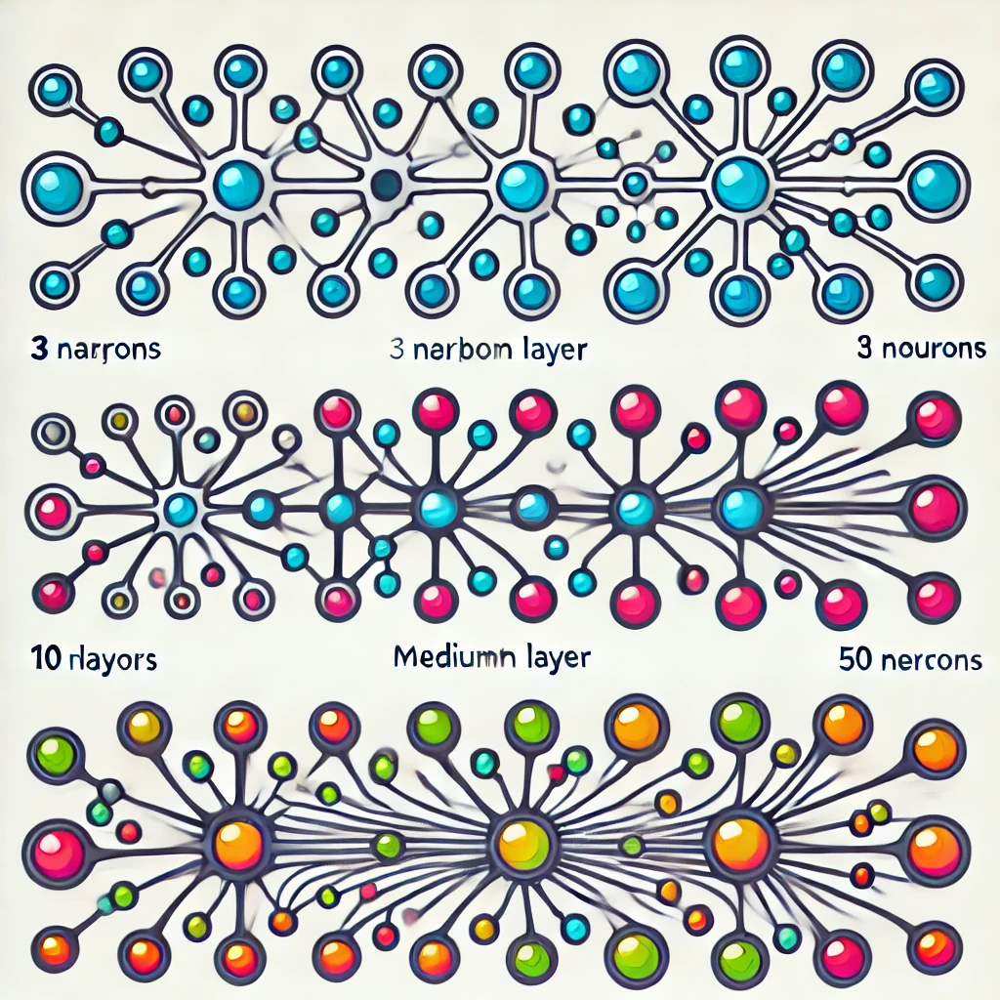
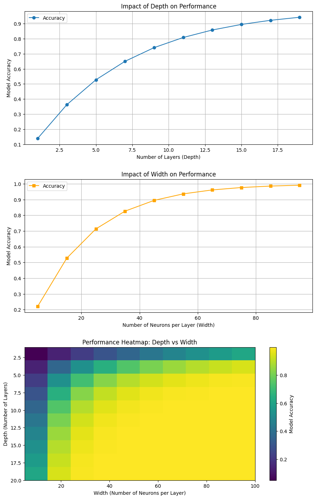

Exploring Depth and Width in Multilayer Perceptrons (MLPs)
Understanding How Network Architecture Influences Performance
Introduction
Multilayer Perceptrons (MLPs) are fundamental components of deep learning and form the backbone of many modern machine learning systems. MLPs are feedforward neural networks with one or more hidden layers between the input and output layers. They can model complex non-linear relationships, making them versatile for tasks like classification, regression, and more.
MLPs revolutionized machine learning by introducing the concept of learning hierarchical features through multiple layers of neurons. Each layer extracts progressively more abstract features, enabling MLPs to solve complex problems that linear models struggle with. For instance, in image recognition, shallow layers might identify edges, while deeper layers detect complex objects.
Depth and Width in Neural Networks:
The "depth" of an MLP refers to the number of hidden layers, while "width" refers to the number of neurons per layer. These two aspects significantly influence the model’s learning capacity. Depth allows the network to model hierarchical structures, while width determines its ability to capture diverse patterns. Striking the right balance between depth and width is critical for building efficient neural networks.
In this tutorial we will explore how two critical parameters—depth (the number of layers) and width (the number of neurons per layer)—influence the performance of MLPs. These parameters significantly affect how an MLP learns, generalizes, and handles computational resources. Understanding their interplay is essential for optimizing neural networks for specific tasks.
This tutorial aims to provide a thorough understanding of the trade-offs associated with depth and width and how they impact the design of effective MLP architectures. Practical experiments, real-world applications, and visualizations will supplement the discussion to enhance comprehension.
Concepts of Depth and Width
Depth
Depth in a neural network refers to the total number of layers, including the input layer, hidden layers, and the output layer. A deeper network can theoretically learn more complex representations by progressively extracting higher-level features.
Key Insights:
Feature Hierarchy: Deeper networks learn hierarchical representations (e.g., edges, shapes, objects in images).
Expressive Power: Theoretically, increasing depth increases the expressive power of a network, but diminishing returns and practical challenges like vanishing gradients arise beyond a certain point.
Training Challenges: Issues such as vanishing/exploding gradients and increased computational cost can occur. Solutions include techniques like batch normalization, residual connections, and ReLU activations.
Width
Width refers to the number of neurons in each layer. Wider networks have a larger capacity to learn and memorize complex data but might require careful regularization to avoid overfitting.
Key Insights:
Capacity: Increasing width allows networks to better represent complex functions, but the benefits plateau after a certain point.
Training Challenges: Wider networks may require more data to avoid overfitting.
Expressive Limitations: A wide but shallow network can approximate functions but may lack the ability to learn compositional hierarchies compared to deeper networks.

Comparing Depth and Width
Discussion
Depth and width are complementary aspects of neural network design. While depth helps in learning compositional features, width ensures sufficient capacity for representation.
Trade-offs: Deep and narrow networks might fail to generalize complex data, while shallow and wide networks might overfit.
Balanced Design: In practice, moderate depth and width often yield the best results.
import matplotlib.pyplot as plt
import numpy as np
# Set up the figure
fig, axes = plt.subplots(3, 1, figsize=(10, 15))
fig.tight_layout(pad=5)
# Diagram 1: Depth vs Performance (accuracy)
depth = np.arange(1, 21, 2) # 1 to 20 layers with step of 2
accuracy_depth = 1 - np.exp(-0.15 * depth) # Simulated performance trend
axes[0].plot(depth, accuracy_depth, marker='o', label='Accuracy')
axes[0].set_title("Impact of Depth on Performance")
axes[0].set_xlabel("Number of Layers (Depth)")
axes[0].set_ylabel("Model Accuracy")
axes[0].grid(True)
axes[0].legend()
# Diagram 2: Width vs Performance (accuracy)
width = np.arange(5, 105, 10) # 5 to 100 neurons per layer
accuracy_width = 1 - np.exp(-0.05 * width) # Simulated performance trend
axes[1].plot(width, accuracy_width, marker='s', color='orange', label='Accuracy')
axes[1].set_title("Impact of Width on Performance")
axes[1].set_xlabel("Number of Neurons per Layer (Width)")
axes[1].set_ylabel("Model Accuracy")
axes[1].grid(True)
axes[1].legend()
# Diagram 3: Heatmap of Depth vs Width performance
depth_values = np.arange(1, 21, 2) # Depth: 1 to 20 layers
width_values = np.arange(5, 105, 10) # Width: 5 to 100 neurons per layer
# Simulated performance (accuracy as a function of depth and width)
performance = np.array([[1 - np.exp(-0.01 * d * w) for w in width_values] for d in depth_values])
im = axes[2].imshow(performance, cmap='viridis', aspect='auto', extent=[5, 100, 20, 1])
axes[2].set_title("Performance Heatmap: Depth vs Width")
axes[2].set_xlabel("Width (Number of Neurons per Layer)")
axes[2].set_ylabel("Depth (Number of Layers)")
fig.colorbar(im, ax=axes[2], label="Model Accuracy")
# Show all diagrams
plt.show()

Impact of Depth and Width
Practical Demonstration
The Fashion MNIST dataset consists of 70,000 grayscale images of 10 fashion categories, such as T-shirts, shoes, and handbags, with 28x28 pixel dimensions. It is a more complex alternative to the MNIST handwritten digits dataset, making it ideal for testing and comparing neural network architectures.
Why I Chose Fashion MNIST
Fashion MNIST offers a balance between simplicity and complexity, making it a suitable dataset to explore how changes in network depth (number of layers) and width (number of neurons per layer) impact model performance. It allows us to experiment with shallow vs. deep architectures, narrow vs. wide networks, and understand how overfitting or underfitting occurs.
Dataset Details
Total images: 70,000 (60,000 for training, 10,000 for testing)
Classes: 10 fashion categories (e.g., T-shirt, Trouser, Dress)
Image size: 28x28 grayscale pixels
What the Code Shows
The code explores how varying depth and width in a Multi-Layer Perceptron (MLP) network affects performance. I tested the following configurations:
Depth: 1, 2, and 3 hidden layers
Width: 128, 256, and 512 neurons per layer
Each configuration was trained for five epochs, with validation accuracy and loss tracked to measure performance changes.
Key Insights
Depth and Overfitting: Deeper networks may capture more complex patterns but can lead to overfitting.
Width and Generalization: Wider networks can improve performance, but excessive width might not always lead to better results.
Validation Accuracy and Loss: Graphs show how well the model generalizes on unseen data across different architectures, highlighting the trade-offs in network design.
These findings help understand the impact of architectural decisions on model performance in real-world tasks like fashion item classification.
import tensorflow as tf
import matplotlib.pyplot as plt
from tensorflow.keras import layers, models
from tensorflow.keras.datasets import fashion_mnist
from tensorflow.keras.utils import to_categorical
# Load Fashion MNIST dataset
(train_images, train_labels), (test_images, test_labels) = fashion_mnist.load_data()
# Preprocess the data
train_images = train_images.reshape((train_images.shape[0], 28, 28, 1))
test_images = test_images.reshape((test_images.shape[0], 28, 28, 1))
train_images, test_images = train_images / 255.0, test_images / 255.0
train_labels = to_categorical(train_labels)
test_labels = to_categorical(test_labels)
# Define a function to build the model
def build_model(depth, width):
model = models.Sequential()
model.add(layers.Flatten(input_shape=(28, 28, 1)))
for _ in range(depth):
model.add(layers.Dense(width, activation='relu'))
model.add(layers.Dense(10, activation='softmax'))
model.compile(optimizer='adam', loss='categorical_crossentropy', metrics=['accuracy'])
return model
# Train the model with different depths and widths
depths = [1, 2, 3] # Experiment with 1, 2, 3 layers
widths = [128, 256, 512] # Experiment with 128, 256, 512 units per layer
history = {}
for depth in depths:
for width in widths:
model = build_model(depth, width)
print(f"Training model with depth={depth} and width={width}")
history[(depth, width)] = model.fit(train_images, train_labels, epochs=5, validation_data=(test_images, test_labels))
# Plotting the results
plt.figure(figsize=(12, 8))
for (depth, width), hist in history.items():
plt.plot(hist.history['val_accuracy'], label=f'Depth={depth}, Width={width}')
plt.title('Validation Accuracy vs. Epochs')
plt.xlabel('Epochs')
plt.ylabel('Validation Accuracy')
plt.legend()
plt.show()
plt.figure(figsize=(12, 8))
for (depth, width), hist in history.items():
plt.plot(hist.history['val_loss'], label=f'Depth={depth}, Width={width}')
plt.title('Validation Loss vs. Epochs')
plt.xlabel('Epochs')
plt.ylabel('Validation Loss')
plt.legend()
plt.show()
Comparing Shallow and Deep MLP Architectures
This code demonstrates how varying the depth of a neural network impacts its ability to learn and generalize. Using the MNIST dataset, which consists of 28x28 grayscale images of handwritten digits, the experiment compares the performance of a shallow model (2 layers) and a deep model (4 layers). This aligns with the core of our study—how depth influences MLP performance.
Purpose of the Code:
Shallow vs. Deep Networks:
Shallow Model: Comprises only two layers, focusing on simplicity. It tests how a basic architecture performs on a standard dataset.
Deep Model: Involves four layers, introducing greater depth to capture hierarchical patterns. It evaluates whether increasing depth improves accuracy and generalization.
Training and Validation Comparison:
By plotting accuracy over epochs for both models, we analyze differences in learning dynamics and performance trends, crucial for understanding how depth affects results.
Practical Insights:
This experiment helps identify trade-offs like overfitting in deeper models and underfitting in shallow networks, key considerations when designing MLP architectures.
Why These Steps Are Important:
Data Preprocessing:
Reshaping and normalizing the data ensures the model trains efficiently by keeping values between 0 and 1, a standard practice to improve convergence in neural networks.
Defining Models:
The shallow and deep models are defined using Sequential, with fully connected Dense layers to process the flattened input. The ReLU activation introduces non-linearity, and the softmax activation ensures proper classification outputs.
Training and Visualization:
Models are trained for 10 epochs each, with accuracy monitored on both training and validation sets. The generated accuracy plot provides a clear comparison, helping to visualize how architectural depth affects learning.
What We Achieve:
Shallow Model: Serves as a baseline to understand the limitations of a simple architecture. Deep Model: Tests the hypothesis that increased depth enables better learning of complex patterns, though with potential risks of overfitting. Visualization: The accuracy graph helps assess whether the added complexity of the deep model is justified by its performance gains.
This experiment mirrors the principles explored in this assignment: balancing depth and width for optimal performance while understanding their trade-offs in practical scenarios.
Summary of Results and Real-World Applications
In this tutorial, we explored how the architectural parameters of depth (number of hidden layers) and width (number of neurons per layer) influence the performance of Multilayer Perceptrons (MLPs), specifically using the Fashion MNIST dataset for practical experiments.
Key Insights from Experiments
Depth's Impact on Model Performance:
Increasing depth (i.e., adding more layers) allows the network to learn more hierarchical features and complex representations. For instance, deeper networks captured increasingly abstract patterns such as shapes and objects in fashion images. However, as the depth grew, the risk of overfitting increased, with performance improvements plateauing or even deteriorating for networks beyond a certain depth. This highlights the importance of balancing network depth to avoid memorizing training data rather than generalizing effectively to new data.
Width and Generalization:
A wider network, with more neurons per layer, generally improved the model's ability to capture diverse patterns in the data. However, after a certain point, increasing width beyond an optimal threshold did not contribute significantly to better performance and might even cause overfitting, especially when the model became too complex and started memorizing noise instead of meaningful patterns. This demonstrates the trade-off between increasing width for better feature representation and avoiding excessive complexity that leads to overfitting.
Trade-offs Between Depth and Width:
The interplay between depth and width is crucial for optimal MLP performance. A shallow but wide network may struggle with learning complex hierarchies, while a deep but narrow network could fail to generalize on complex tasks. The best-performing architectures were often those that struck a balance between the two: sufficient depth for learning abstract features, coupled with an adequate width to represent them. This is crucial when designing networks for practical tasks, such as classifying fashion items in the Fashion MNIST dataset.
Practical Implications for Neural Network Design
Optimizing Network Design:
Hyperparameter tuning is essential when working with MLPs. By experimenting with varying depths and widths, we can determine the configuration that offers the best trade-off between model complexity and generalization. It’s important to start with simpler architectures and progressively test more complex configurations, ensuring that performance on validation data is continuously monitored.
Avoiding Overfitting:
To prevent overfitting, especially in deeper or wider networks, methods like regularization, dropout, and early stopping are crucial. These techniques help maintain the model's ability to generalize to new, unseen data, rather than becoming overly specialized to the training set.
Computational Efficiency:
Larger and deeper networks require more computational resources. Therefore, while exploring the impact of depth and width, it’s necessary to balance performance with computational efficiency. In production environments, where both time and resources are limited, optimizing network architecture for efficiency without sacrificing accuracy becomes essential.
In conclusion, this study underscores the importance of understanding the relationship between depth and width when designing MLPs. By strategically choosing network architectures, we can improve model performance, reduce overfitting, and ensure that MLPs are computationally efficient for real-world applications such as image classification tasks like Fashion MNIST.
Conclusion and Personal Reflection
While working on this project, I faced several challenges that deepened my understanding of neural network architecture and the practical considerations involved in designing effective models.
Depth and Overfitting: Initially, I was excited to increase the depth of the neural network, believing that adding more layers would always improve model performance. However, as I worked through the experiments, I encountered a point where increasing depth led to diminishing returns and even a drop in performance.This was a challenge I hadn't anticipated. It helped me realize the fine balance between model complexity and overfitting. In the beginning, I struggled to understand how a deeper network could "memorize" the data instead of generalizing. But as I saw the training accuracy soar while validation accuracy stagnated or dropped, the concept of overfitting became much clearer. This hands-on experience highlighted the importance of tuning depth carefully to avoid overfitting, something I had read about but now truly understood
Trade-off Between Depth and Width: Another challenge arose when I was comparing the effects of depth and width. While I expected increasing width (more neurons per layer) to always improve the model's ability to capture features, I observed that after a certain point, adding neurons didn’t improve performance and might have even led to overfitting. This realization made me think critically about the trade-offs involved. I found it difficult at first to decide on the "optimal" architecture, but through trial and error, I learned that striking the right balance between depth and width is essential for effective model generalization.
Practical Implications: The project also gave me a deeper understanding of the computational trade-offs when using deeper or wider models. I initially underestimated how much computational resources would be required as I increased the depth and width of the networks. This forced me to reconsider the importance of computational efficiency in real-world applications, where resources like time and memory are often limited.
Broader Insights: What stood out to me the most was how neural network design is as much about intuition as it is about math.The trial-and-error process, combined with monitoring the models' performance on training and validation sets, helped me realize that while there are theoretical guidelines, the best architecture often emerges from hands-on experimentation and fine-tuning. This experience solidified my understanding of neural network design and gave me a deeper appreciation for the art of model optimization.
Overall, this project helped me go beyond theoretical knowledge and provided practical insights that I can apply in future machine learning tasks. The hands-on challenges and the iterative process of fine-tuning the models gave me a much more nuanced understanding of how to design, train, and optimize neural networks effectively.